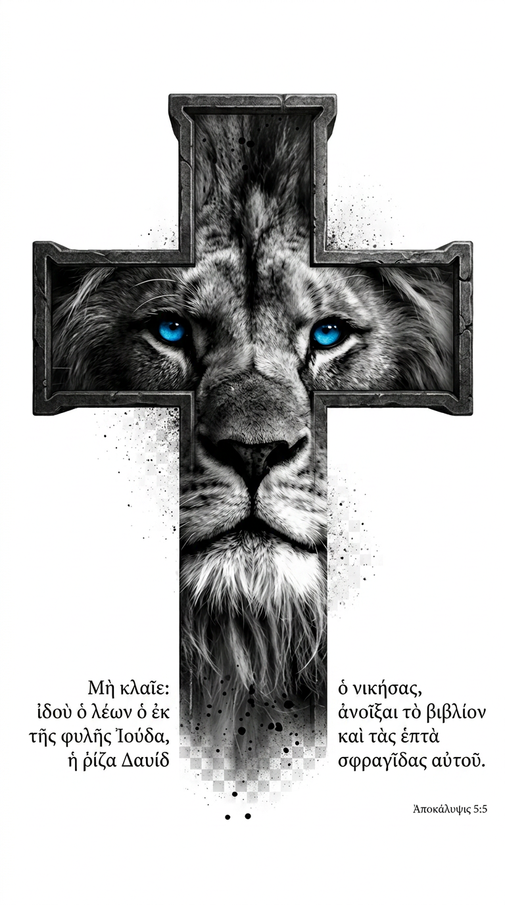
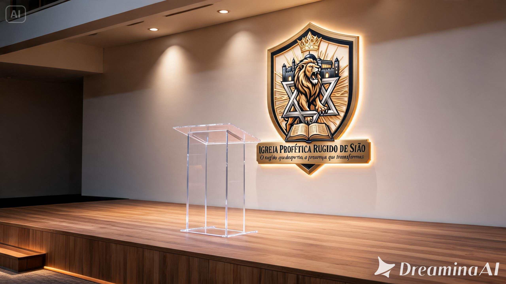
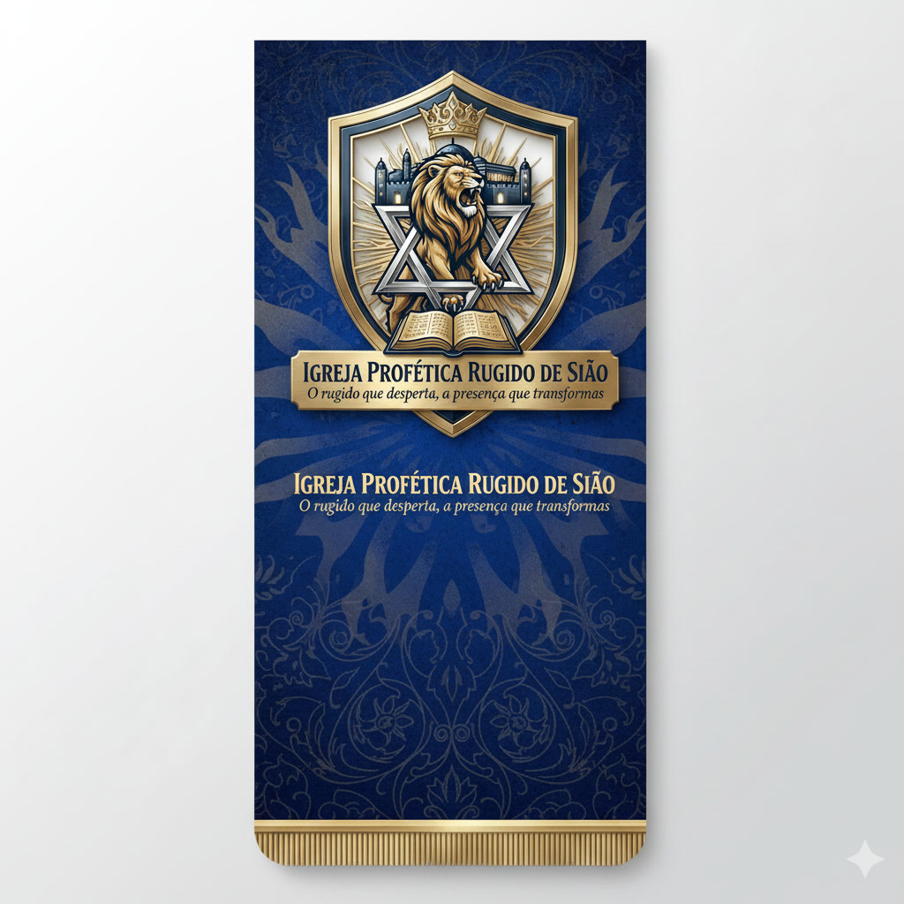

05 // Imagens
Biblioteca de Imagens
images/logo/logo.png
Logo principal · uso: header, footer, hero, favicon

images/hero/hero-lion.jpg
Leão hero · mix-blend-luminosity opacity-60
images/leadership/pastor.png
Pr. Fabrício · seção Liderança
images/leadership/pastora.png
Pra. Priscila · seção Liderança
images/ministry/conexao.jpg
Comunidade / Culto da Família

images/ministry/lion-cross.png
Leão + Cruz · Conquista / Vigília

images/ministry/foto-igreja.png
Foto da igreja · uso geral

images/generated/generated-01.png
Imagem gerada · cultos / ministério

images/backgrounds/parede-fundo.jpg
Textura de fundo · uso como overlay
Padrão de uso: opacity-20 to 60 + mix-blend-luminosity para integrar com bg-[#050505]